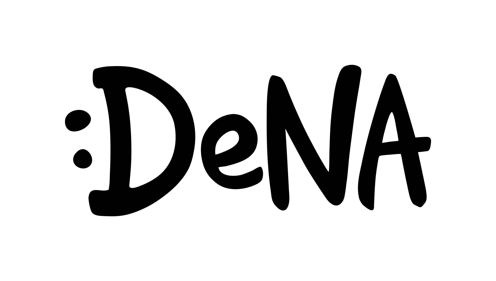
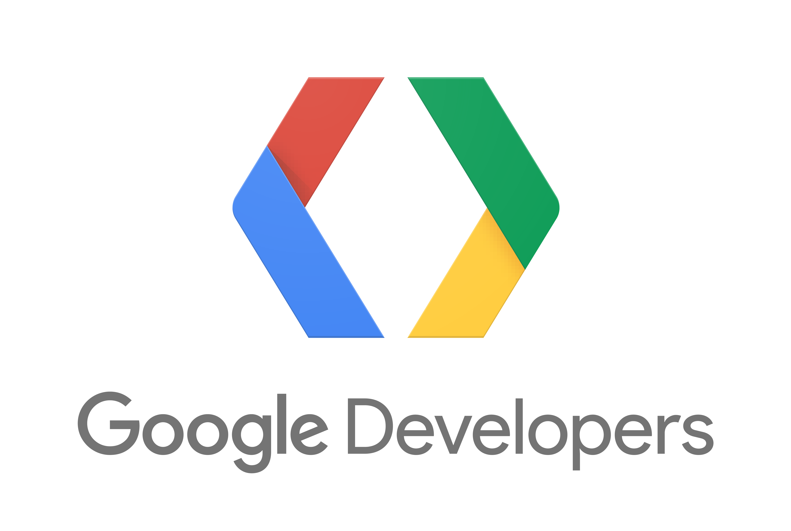
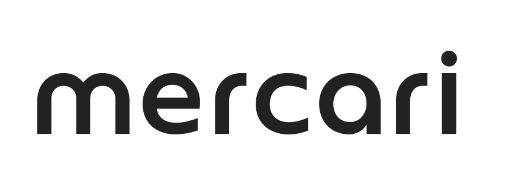
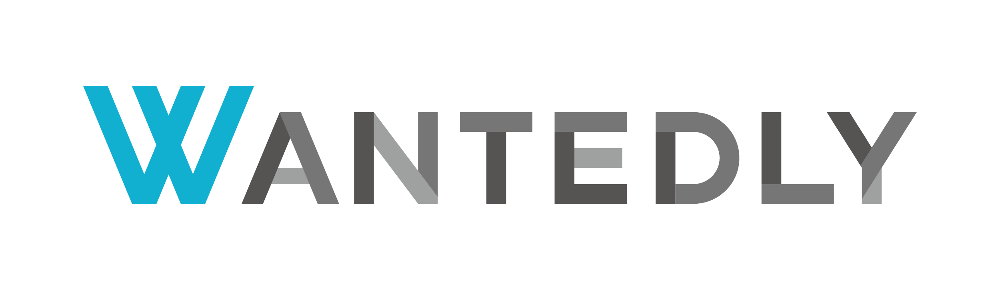

Conference of programming language Go in Tokyo.
| Date | Venue |
|---|---|
| 2018/11/25 (Sun) | Google Tokyo office 27F Roppongi Hills Mori Tower, 6-10-1 Roppongi, Minato-ku, Tokyo, Japan |

Steven maintains the Go runtime for App Engine Standard, and recently launched a new runtime for Go 1.11 which removes the limitations of the old platform. He's been at Google for two and a half years. He previously worked at a computational genomics startup and at Amazon. He primarily writes C++ and Go at Google, and Python and Go in his free time. You can find him at http://github.com/sbuss.
Attendees can register on the connpass page.
Wantedly, Inc. and Meracri, Inc. provide scholarship programs for students. If you live in faraway place from Tokyo, you can apply these scholarship programs.
| Time | Room A | Room B | Room C | Cafe |
|---|---|---|---|---|
| 09:30 - | Open | - | - | |
| 10:00 - 10:10 | Opening Talk | - | - | |
| 10:10 - 11:00 | Keynote | - | - | |
| 11:00 - 11:10 | Break | - | - | |
| 11:10 - 11:30 | S1 | Handson by Progate(JP/EN) | - | |
| 11:30 - 11:50 | S2 | - | ||
| 11:50 - 13:20 | Lunch Break | |||
| 13:20 - 13:40 | A1(S) | B1(S) | Handson by Women Who Go Tokyo | - |
| 13:40 - 14:00 | A2(S) | B2(S) | - | |
| 14:00 - 14:10 | Break | - | ||
| 14:10 - 14:50 | A3(L) | B3(L) | ||
| 14:50 - 15:00 | Break | |||
| 15:00 - 15:20 | A4(S) | B4(S) | Handson by golang.tokyo | - |
| 15:20 - 15:40 | A5(S) | B5(S) | - | |
| 15:40 - 15:50 | Break | - | ||
| 15:50 - 16:30 | A6(L) | B6(L) | - | |
| 16:30 - 16:40 | Break | |||
| 16:40 - 17:00 | A7(S) | B7(S) | - | - |
| 17:00 - 17:20 | S3 | - | - | |
| 17:20 - 17:30 | Break | |||
| 17:30 - 17:35 | - | Open After Party | ||
| 17:35 - 17:55 | - | S4 | ||
| 17:55 - 18:10 | - | LT x 2 | ||
| 18:10 - 18:40 | - | Close After Party | ||
| 18:40 - 19:00 | Close | |||
| Language | Speaker | Session Type |
|---|---|---|
| Japanese | @yagi5（株式会社メルカリ） | Sponsor Session |
メルカリでは、モノリシックなAPIをMicroservicesとしてGoで作り直すことを選択しました。 これからGoでMicroservicesを作っていくチームや会社のために、ライブラリやアーキテクチャ、チーム構成などについても紹介します。
| Language | Speaker | Session Type |
|---|---|---|
| Japanese | 武田 洋平（株式会社メディアドゥ） | Sponsor Session |
goでプロダクトを作りたい！と思う方は昨今たくさんいると思いますが、実際に会社で導入するとなると色々ハードルが高いところもあるのではないでしょうか。 弊社もそんな会社の一つでしたが、なんとかgo導入に踏み切りました。その過程を、泥臭いような話も含めて紹介したいと思います。
| Language | Speaker | Session Type |
|---|---|---|
| Japanese | @creasty, @izumin5210（ウォンテッドリー株式会社） | Sponsor Session |
Wantedly では解決する課題に応じた最適な技術選定をするために、機能毎に小さくサービスが分けられ、Golang, Ruby,Python, Rust, Node.jsなど多様な言語が使われています。この様な状況においては、増大する開発の複雑さに立ち向かい、「気持ちよく」開発を継続できる環境が重要となります。
本セッションでは「言語が異なることによる開発環境構築の複雑化」と「複数サービス間通信時のサービスディスカバリ」の2つの問題に焦点を当て、ローカル環境での開発体験をいかに向上させたかについてお話します。
| Language | Speaker | Session Type |
|---|---|---|
| Japanese | 井本 裕（株式会社ディー・エヌ・エー） | Sponsor Session |
DeNA では Google App Engine Standard Environment (GAE SE) を用い、マイクロサービスとして大規模なトラフィックをさばくウェブサービスを開発・運用しています。 GAE SE は強力なPaaSですが、1インスタンスあたりのメモリ使用量が限られるという制約もあります。本発表では、GAE SE 上で高ハイパフォーマンスを実現するために、日々開発現場で用いているメモリ最適化手法を中心に、コードレビュー観点をご紹介します。
| Language | Speaker | Session Type |
|---|---|---|
| Japanese | munisystem | Short Session |
OpenCensus は Application Performance Management(APM) のためのフレームワークです。 このセッションはまず、ウェブアプリケーションにおける APM の重要性と現状の課題について説明します。 その上で OpenCensus がどのように課題を解決したのか、また OpenCensus による Go のアプリケーションモニタリングの未来について、アーキテクチャやエコシステム、実装例を交えながら解説します。
| Language | Speaker | Session Type |
|---|---|---|
| Japanese | orisano | Short Session |
パフォーマンス・チューニングの勉強用に作った画像変換サーバで起きた問題への調査, kubeletのパフォーマンス問題を調査してPRを出した話.
| Language | Speaker | Session Type |
|---|---|---|
| Japanese | Yoshiki Shibukawa | Long Session |
Describe Biscuit's source code
| Language | Speaker | Session Type |
|---|---|---|
| Japanese | izumin5210 | Short Session |
自分は gRPC サーバの scaffolding tool / template generator である grapi というツールを開発しています．最近，この grapi の generator 部分を pluggable にしたいという要求が発生し，その設計・実装をしました． 世の中には多種多様な手法で実装された pluggable な CLI が存在します． 本発表では，実装手法の検討時に行った既存ツールの調査と実際に採用した手法の紹介，実装時に意識したことなどについて紹介します．
| Language | Speaker | Session Type |
|---|---|---|
| Japanese | monochromegane | Short Session |
Go言語では、賢いランタイムによって効率的に並行処理が実行されます。 しかしながらアプリケーションごとの最適なGoroutine起動数の決定は依然として開発者の経験と地道なチューニングに依存しています。 そこで本セッションでは、フィードバック制御と呼ばれる仕組みを用いてGoroutineの起動数を動的に調整する手法を検討します。 発表では、フィードバック制御の基礎に触れたのち、Goランタイムの特性を踏まえた制御器の設計を通し、これらを実現するライブラリを開発して紹介します。
| Language | Speaker | Session Type |
|---|---|---|
| Japanese (partially English) | moriyoshi | Long Session |
Explains the effective usage of channels and sync.* functions.
| Language | Speaker | Session Type |
|---|---|---|
| Japanese | チェシャ猫 | Short Session |
メッセージパッシングによる並行処理は強力で魅力的な機能ですが、同時にバグが発生しやすくかつ発見しづらい部分でもあります。本セッションでは、Go プログラムからその挙動を形式的に記述した振舞い型 (behavioural types) を抽出することで、並行処理に潜むバグを静的に検出する手法について解説します。
| Language | Speaker | Session Type |
|---|---|---|
| Japanese and English | Angela Funk | Short Session |
While the Go community continues to grow year after year, there are a lot of people who struggle using Go. Many find the language not welcoming and geared towards an exclusive group of developers.
In this session, Angela will talk about the importance of writing documentation for your Go code, lessons she’s learned from writing Go documentation, and how spending a little bit of time documenting your Go code can have a huge impact on your career.
| Language | Speaker | Session Type |
|---|---|---|
| English | huydx | Short Session |
Write your own database like playing lego
| Language | Speaker | Session Type |
|---|---|---|
| Japanese | Daisuke Maki | Long Session |
OpenAPI を操るツールはたくさんありますが、自分のユースケースに合わせた変更を行いたい場合に満足いくライブラリレベルでのAPIを提供しているケースは稀です。OpenAPIの仕様を覚えるのと同時に、RESTやProtocol Bufferのデータを自分好みに出力するために必要な様々なAPIを揃えたライブラリを作成したので、その設計思想を含めた紹介をさせていただきます
| Language | Speaker | Session Type |
|---|---|---|
| English | achiku | Short Session |
Many of API servers tend to interact with RDBMS to serve structured data for frontend. Unlike other languages with full-featureed web application frameworks, it seems, at first glance, a little difficult to write tests for Go applications using RDBMS. However, knowing `database/sql` with a bit of RDBMS knowledge is just enough to write clean tests for RDBMS backed Go applications. In this talk, I'll describe how to write efficient RDBMS backed Go application tests.
| Language | Speaker | Session Type |
|---|---|---|
| Japanese | takochuu | Short Session |
同じリポジトリで3カ国向けにAPIサーバーを提供するナレッジについてお話します。
| Language | Speaker | Session Type |
|---|---|---|
| Japanese | timakin | Long Session |
GoのAPIのテストを書く場合、ユニットテストのようにGo標準のツールで担保できる範囲を超えた共通処理を用意したり、実行環境作りを意識する必要があります。レイヤー化されたアーキテクチャでどこまでモックするか、ユニットテストと統合テストのバランス、無駄だった共通化、使ってみてダメだったツールなど、失敗事例も含めて模索したGoのAPIのテストについて、地道に改善した結果をお話しします。
| Language | Speaker | Session Type |
|---|---|---|
| Japanese | sonatard | Short Session |
GAE/Go 1st genと2nd genの比較、移行について、2nd genになったことで改めてGAEの価値の再考
| Language | Speaker | Session Type |
|---|---|---|
| Japanese | Kazuki Higashiguchi | Lightning Talk |
所属企業にて、Go言語でのAPIをサーバーサイドアーキテクチャの採用・そこまでの進め方について話します。
| Language | Speaker | Session Type |
|---|---|---|
| Japanese | Kazuki Higashiguchi | Lightning Talk |
dockerでローカル開発環境を整備する際に毎回dockerをビルドし直すなどをするのは大変開発効率がつらいのですが、gorealizeを利用することでdockerを利用して快適に開発できる環境を作れるようになります。
こちらについて話せればと思っています。
We require our attendees and speakers to follow Go Community Code of Conduct.
|  |  | ||
|  |
|
 |
Feel free contact us via this form.
This event is organized by the non-commercial organization, further more, by a few individual volunteers. We appreciate your understanding that the event quality is totally depending on the support from all the attendees. Event organizers are also attendees, and to keep their motivation, the event is organized with the minimum effort by the organizers. To be more concrete, here is the list of what the organizers don't provide by themselves.
If you are kind enough to support anything, please let us know via this form.